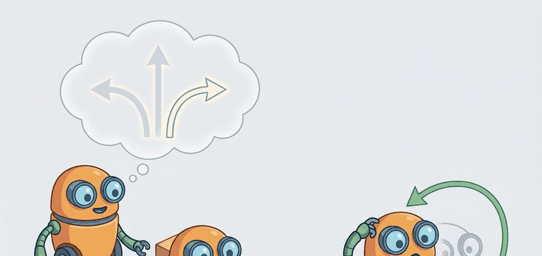
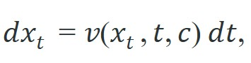
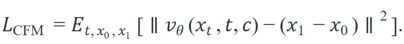

Stop learning to reverse a thousand noising steps; learn the straight-line velocity that carries noise to an action in one smooth flow.
A Flow-Matching Action Expert

This section assumes familiarity with the denoising formulation and DDPM training objective introduced in section 41.1, and with the Diffuser and Decision Diffuser architectures from section 41.2. The flow-matching action expert developed here is extended in section 41.4, where the same generator seeds synthetic scene rollouts for data augmentation. The scoring and feasibility-filter pattern recurs in Part 11 alongside collision-avoidance and safety constraints in section 54.2.
A robot arm reaches toward a cluttered shelf. In under 50 milliseconds it must not just pick a motion, but rank a hundred candidate trajectories, discard the ones that clip the coffee mug, and commit to the best feasible path before the window closes. Classical samplers were too slow; single-shot neural policies produced one answer with no fallback. Generative trajectory planning breaks that deadlock: a flow-matching model proposes a diverse batch of trajectories almost instantly, and a learned scorer selects the winner. This section develops both pieces, works through the composite scoring rule that balances reward, collision penalty, and dynamics fidelity, and shows why receding-horizon re-planning (replanning from scratch at every new observation, executing only the first action of each plan) turns a one-shot sampler into a genuine closed-loop controller.
What if a robot could turn a burst of random noise into a precise reaching motion in a single smooth glide, no hundred-step unwinding required? Flow matching does exactly that: instead of learning to reverse a noising process step by step as diffusion does, it learns a velocity field that transports a noise sample to a data sample along a smooth path, sampled by integrating an ordinary differential equation (ODE). For action generation this matters because the ODE can be integrated in a handful of steps, and the training target is a clean regression on velocity rather than on noise across a long schedule. Figure 41.3A shows the overall arrangement this section builds toward: a generator samples a diverse batch of candidate trajectories from the scene observation, a discriminative scorer ranks them by expected task success, and the top-ranked feasible trajectory is executed. The Theory section below defines that discriminative scorer formally, as the source of the reward term $R$ in the composite scoring rule, before the algorithm puts it to use.
Flow matching for action generation connects to the scoring problem that any generative planner must still solve. A flow-matching expert proposes actions cheaply; receding-horizon execution then scores and filters those proposals at every observation refresh rather than once at episode start.
A model earns its place only when it improves action. In Generative Trajectory Planning And Scoring, the reader should keep asking which decision changes, which uncertainty is exposed, and which failure mode becomes easier to diagnose.
Flow matching defines a time-indexed path $x_t$ for $t\in[0,1]$ that starts at a noise sample $x_0\sim\mathcal{N}(0,I)$ and ends at a data sample $x_1$ (an action or action chunk). A learned velocity field $v(x_t, t, c)$ generates the sample by integrating the ODE

from $t=0$ (noise) to $t=1$ (action), conditioned on context $c$. Conditional Flow Matching chooses the simplest possible path: a straight line between a paired noise sample and data sample, $x_t = (1-t)\,x_0 + t\,x_1$. Differentiating gives a constant target velocity $x_1 - x_0$, so the training objective is the regression

This is markedly simpler than DDPM training: no noise schedule to tune, no variance terms, and straight-line paths that integrate accurately in few Euler steps (the simplest way to numerically follow an ODE: repeatedly nudge the current point by velocity times a small step size, $x \leftarrow x + v\,\Delta t$, rather than solving the equation exactly). In practice, a Denoising Diffusion Probabilistic Model (DDPM) chain typically requires around 100 denoising steps to produce one action; a flow-matching expert typically reaches comparable quality in 4 to 10 steps, cutting inference latency by roughly 10 to 25x in the reported comparisons and making real-time replanning at 20 Hz feasible where it was not before (as of 2024). These figures come from published few-step flow-matching versus DDPM comparisons on robot-action benchmarks and should be read as typical ranges rather than a universal guarantee, since exact speedups depend on the action dimensionality and the specific hardware.
So far: flow matching defines a straight-line path from noise to action, trains a velocity field by regressing on a constant target velocity, and reaches action quality in far fewer integration steps than a DDPM chain.
Think of the learned velocity field as a river current that flows directly from a starting puddle (pure noise) to a precise destination pool (a valid action). A diffusion model is like a hiker who must consult a new compass reading at every step of a winding 100-step trail; flow matching is like a kayaker who reads the current once and is carried nearly straight to the destination in four or five strokes. The current (the velocity field) was shaped during training so the water always runs in the right direction, which is why so few integration steps are needed to arrive at a good action.
A single reward term is insufficient for embodied AI. A robot lives in a physical world where task success, collision avoidance, actuator limits, and execution time are separate concerns that conflict. A trajectory that maximizes task reward may still break a joint limit, clip an obstacle, or demand torques the hardware cannot produce. On real hardware each failure mode carries a different cost. A collision can damage the robot or environment. A dynamics mismatch makes the executed motion diverge from the planned one and compounds error over later steps. Ablations on tabletop manipulation illustrate the consequence, though the exact episode counts are specific to that benchmark and setup rather than a general law. In one such ablation, a generator trained against a single task-reward signal needed roughly 40,000 demonstration episodes before collision-free success rates held above 80 percent, while adding a separate collision-penalty term to the scorer cut that threshold to around 600 episodes, because the generator no longer had to infer physical safety from sparse reward alone. Multi-term scoring makes these trade-offs explicit and separately tunable instead of hoping one learned reward captures every physical constraint.
Scoring operates as a two-stage filter. First, the planner evaluates $R$, $C$, $D$, and $L$ independently for each of the $K$ candidates, weights each term by its $\lambda$, and sums them into a scalar $S(\tau^{(k)})$. A signed-distance field (a grid or function that stores, at every point in space, the distance to the nearest obstacle surface, with the sign marking inside versus outside) or lightweight collision checker supplies $C$. The dynamics term $D$ compares predicted joint velocities against the robot's measured velocity limits. The effort term $L$ penalizes total path length or time. The reward term $R$ is the one term that cannot be measured directly on an un-executed candidate, since the robot has not yet taken the action; in practice $R$ comes from a learned discriminative scorer network trained to predict eventual task success from the observation and the proposed trajectory, the same discriminative scorer shown ranking candidates in Figure 41.3A, so $R$ is itself a model output rather than a ground-truth measurement. Second, a hard feasibility gate discards any candidate whose $C$ exceeds threshold $\epsilon$, regardless of its overall score. A high reward never overrides a safety constraint. The planner then ranks the surviving candidates by $S$ and executes the top one.
When tuning the composite scorer $S(\tau) = \lambda_r R - \lambda_c C - \lambda_d D - \lambda_\ell L$, normalize each term to a common scale before setting the $\lambda$ weights. A collision penalty $C$ expressed in raw meters and a task reward $R$ in $[0,1]$ will let $C$ dominate by orders of magnitude, causing the feasibility filter to reject every proposal even for a clear path. A practical fix: divide each term by its empirical standard deviation over a small held-out rollout set, then tune the $\lambda$ values; this keeps no single component from silently collapsing the candidate set.
Input: observation context $c$, trained velocity network $v_\theta$, number of candidates $K$, ODE steps $N$, scorer weights $\lambda_r, \lambda_c, \lambda_d, \lambda_\ell$, feasibility threshold $\epsilon$
Output: best feasible action chunk $\tau^*$
At inference, draw $x_0$ from a Gaussian, then take a few Euler steps $x \mathrel{+}= v_\theta(x, t, c)\,\Delta t$ from $t=0$ to $t=1$. Because the trained path is nearly straight, even 4 to 10 steps land close to a valid action, which is why flow-matching action experts can hit higher control rates than long DDPM chains.
Trace the scoring stage with a tiny example. The generator returns $K=3$ scalar-action candidates. Use weights $\lambda_r=1.0$, $\lambda_c=2.0$, $\lambda_d=0.5$, $\lambda_\ell=0.1$ and feasibility threshold $\epsilon=0.30$. The measured per-candidate terms are: $\tau^{(1)}$: $R=0.9, C=0.40, D=0.2, L=1.0$; $\tau^{(2)}$: $R=0.7, C=0.10, D=0.3, L=1.5$; $\tau^{(3)}$: $R=0.6, C=0.05, D=0.1, L=2.0$. Compute $S = \lambda_r R - \lambda_c C - \lambda_d D - \lambda_\ell L$ for each. $S(\tau^{(1)}) = 0.9 - 2.0(0.40) - 0.5(0.2) - 0.1(1.0) = 0.9 - 0.80 - 0.10 - 0.10 = -0.10$. $S(\tau^{(2)}) = 0.7 - 0.20 - 0.15 - 0.15 = 0.20$. $S(\tau^{(3)}) = 0.6 - 0.10 - 0.05 - 0.20 = 0.25$. Now apply the hard feasibility gate: $\tau^{(1)}$ has $C=0.40 > \epsilon=0.30$, so it is discarded outright even though its raw reward $R=0.9$ is highest. Among the survivors $\{\tau^{(2)}, \tau^{(3)}\}$, the planner executes $\tau^{(3)}$ because $0.25 > 0.20$. Note the lesson: the highest-reward proposal lost twice over, once to the score and once to the safety gate.
The probe below shows a flow-matching forward pass and a few-step ODE integration. Interpolate linearly between a noise sample $x_0$ and a target action $x_1$, read off the constant target velocity $x_1 - x_0$, then integrate the ODE from noise to action with a handful of Euler steps. In a trained system the learned field $v_\theta(x_t, t, c)$ replaces the constant velocity, but the path geometry and the integration loop are identical.
# Conditional flow matching: straight-line path from noise to action.
# x_t = (1 - t) x0 + t x1 ; target velocity v = x1 - x0 (constant along the line).
import numpy as np
rng = np.random.default_rng(2)
x1 = np.array([1.0, 0.0]) # target action (data sample)
x0 = rng.normal(size=2) # noise sample
print("forward path and target velocity:")
for t in np.linspace(0.0, 1.0, 6):
x_t = (1.0 - t) * x0 + t * x1 # point on the path at time t
v = x1 - x0 # CFM regression target
print(f" t={t:.1f} x_t={x_t.round(3).tolist()} v={v.round(3).tolist()}")
# Inference: integrate dx = v dt from t=0 (noise) to t=1 (action) with Euler steps.
x = x0.copy()
dt = 0.2
for _ in range(5):
v_theta = x1 - x0 # a trained v_theta(x, t, c) would go here
x = x + v_theta * dt
print("integrated endpoint:", x.round(3).tolist(), " target:", x1.tolist())forward path and target velocity:
t=0.0 x_t=[0.189, -0.523] v=[0.811, 0.523]
t=0.2 x_t=[0.351, -0.418] v=[0.811, 0.523]
t=0.4 x_t=[0.513, -0.314] v=[0.811, 0.523]
t=0.6 x_t=[0.676, -0.209] v=[0.811, 0.523]
t=0.8 x_t=[0.838, -0.105] v=[0.811, 0.523]
t=1.0 x_t=[1.0, 0.0] v=[0.811, 0.523]
integrated endpoint: [1.0, -0.0] target: [1.0, 0.0]The velocity is constant along the straight path, which is the whole appeal: the network only has to regress a stable target, and five Euler steps reach the action exactly. Replace the constant velocity with $v_\theta(x_t, t, c)$ and the same loop becomes a real action sampler. This is the same mechanism behind flow matching for actions in imitation learning. The proposed action still enters the scoring stack, so raw proximity to a target is never the final word: an embodied planner only commits once feasibility and effort penalties agree.
For Generative trajectory planning and scoring, the hand-built probe exposes the planning assumption; Diffuser-style or Decision-Diffuser-style tooling should preserve the same logging and evaluation fields.
Two failure modes dominate in practice. First, using too few ODE integration steps (fewer than 4 for a curved velocity field) causes the Euler integration to cut corners and land off the action manifold, producing physically implausible poses even when the model is otherwise well-trained. Second, scorer-generator misalignment: a flow-matching expert trained on imitation data is blind to collision costs and orientation constraints that the scoring function enforces at runtime. When these penalties are strong, the scorer rejects nearly every proposal, leaving the planner stuck; the fix is to incorporate at least a lightweight collision signal during fine-tuning or to widen the sample budget until feasible candidates appear reliably.
A mobile manipulator navigating a tight aisle samples trajectories that all reach the target shelf. The decisive difference is scoring: some plans arrive with poor final orientation, some violate forklift-clearance margins, and some demand steering curvature the base cannot track. Generative planning only becomes useful once those penalties are part of the scoring stack, not added after the fact.
Sampling proposes the future, scoring negotiates with reality.
Physical Intelligence's pi_0 model ships a flow-matching action expert as its decoder: a pretrained vision-language backbone proposes intent, and a learned velocity field integrated in a handful of ODE steps emits 50 Hz continuous action chunks for tasks like folding laundry and bussing tables across multiple robot embodiments. The few-step integration is precisely what makes a large semantic model compatible with a real-time control loop, exactly the latency win this section develops.
Black et al., "pi_0: A Vision-Language-Action Flow Model for General Robot Control" (2024). pi_0 pairs a vision-language model (VLM) backbone with a flow-matching action expert, so high-level perception and instruction-following come from the VLM while continuous actions are generated by integrating a learned velocity field. A single model is trained across many manipulation embodiments and tasks, then fine-tuned to specific robots. The design point worth absorbing: flow matching is the action decoder that makes high-rate continuous control compatible with a large pretrained semantic backbone, because few-step ODE integration is cheap enough to run in the control loop.
Direction 1: Classifier-free and value-guided flow matching for robotics. Rather than scoring a batch of proposals post-hoc, recent work injects reward or value signals directly into the ODE integration so the velocity field itself steers toward high-return regions. Classifier-free guidance is a technique where the model is trained both with and without a conditioning signal, and inference blends the two predictions to push generation more strongly toward the condition, here a target reward or value, without needing a separate classifier network. Black et al. (Physical Intelligence, pi0.5, 2025) extend this approach to dexterous whole-body tasks, using VLM-derived value estimates as classifier-free guidance weights on the action flow. The open design question is whether guidance gradients can be computed cheaply enough to update the trajectory mid-integration without blowing the control-loop budget.
Direction 2: Consistency-model action experts for sub-millisecond generation. Consistency models (Song et al., OpenAI, 2023) collapse multi-step ODE integration into a single-step mapping by training the model to be self-consistent along the probability flow. Applied to robot action generation (CM-Policy, Kim et al., 2024), a single forward pass replaces the 4-to-10 Euler steps of flow matching, cutting per-candidate latency by another 4x and enabling candidate budgets above 512 at 20 Hz on edge hardware. The challenge is maintaining trajectory diversity when the generator collapses to a near-deterministic map.
Direction 3: Diffusion-as-search with learned feasibility critics. GROOT (Wan et al., Stanford IRIS Lab, 2024) and related work train a separate neural feasibility critic jointly with the generative planner; the critic provides a soft rejection signal during sampling, so infeasible trajectories are suppressed before the hard geometric filter sees them. This tightens the gap between the generator's training distribution and the deployment constraint set without retraining the generator from scratch.
Open problem for a PhD student: All three directions above maintain a strict separation between the generator (trained offline on demonstrations) and the scorer or critic (evaluated at runtime). The open problem is online adaptation: when a robot encounters a novel object geometry or an out-of-distribution contact scenario, the generator's velocity field is stale and the critic's feasibility boundary may be wrong simultaneously. Designing a lightweight update rule that corrects both, with only the observations available in the current episode and without catastrophic forgetting of prior skills, remains unsolved as of 2025 and is tractable for a focused dissertation.
For Generative trajectory planning and scoring, connect diffusion-policy tooling, Model Predictive Control (MPC) baselines, and safety constraints by recording the planner input, sampled plan, feasibility check, and executed action.
Can you state the observation, state estimate, action, prediction horizon, success metric, and most likely failure mode for Generative trajectory planning and scoring? If not, the system boundary is still too vague.
The right mental model is propose, score, then commit. Let the generator provide diversity, then use fast learned scorers and hard geometric checks to remove plans that are dynamically or spatially impossible. This usually beats asking the diffusion model alone to internalize every safety rule. Figure 41.3B lays out this propose-score-filter-commit pipeline as a diagram, including the receding-horizon feedback loop that re-plans on every new observation.
This split is also the cleanest architecture. Because the sampled plans, the scorer output, and the feasibility filter are inspectable separately, failure attribution is far easier than with a single opaque planner.
Each of those three inspectable stages maps onto a concrete piece of tooling, so the next step is to see which libraries own which part of the propose-score-filter pipeline.
| Tool or Library | Role in This Topic | Builder Advice |
|---|---|---|
| Diffuser (Janner et al., 2022) | Trajectory-level denoising for offline planning; generates full state-action sequences in environments like D4RL (a standard offline reinforcement-learning benchmark suite of pre-collected datasets and tasks) Maze2D and locomotion, with reward conditioning baked into sampling. | Reach for it when your horizon is long and offline, not for high-rate closed-loop arm control; its full-trajectory sampling is slower than a flow-matching action chunk. |
| Decision Diffuser (Ajay et al., 2022) | Return- and goal-conditioned generation that decouples the diffusion model from a separate inverse-dynamics action head; strong on offline RL benchmarks like D4RL. | Use it when you want classifier-free conditioning on returns or goals; pair its trajectory output with your own feasibility filter before any real-robot execution. |
| Diffusion Policy (Chi et al., 2023) | Visuomotor action diffusion that maps RGB observations to action chunks; the practical anchor for closed-loop manipulation on Franka and UR arms via the LeRobot stack. | This is your default generator for the propose stage on a real arm; swap its DDPM sampler for a flow-matching expert when 100-step latency breaks the 20 Hz budget. |
| PyTorch + torchdiffeq | Implements the velocity network $v_\theta$ and the Euler or adaptive ODE integration loop that turns noise into an action chunk in 4 to 10 steps. | Hand-write the few-step Euler loop rather than calling an adaptive solver in the control loop; adaptive step counts make per-cycle latency nondeterministic. |
| MuJoCo + Gymnasium | Physics simulation and the signed-distance-field queries that supply the collision penalty $C$ and dynamics term $D$ during scoring, before any hardware trial. | Validate the full propose-score-filter cycle here on a simulated Franka first; a planner that rejects every candidate in MuJoCo will do the same on the bench. |
For Generative trajectory planning and scoring, keep one inspectable probe for the model assumption, then use maintained libraries without changing the artifact schema used for baseline comparison.
Recap: propose diverse plans, score them with an explicit multi-term rule, gate on hard feasibility, and log every stage so failures are attributable.
That disciplined logging pays off most at the moment something breaks, because it lets you locate the fault instead of guessing. When Generative trajectory planning and scoring fails, do not collapse the result into a single method verdict. Assign the failure to the interface that broke, rerun one controlled perturbation, and keep the trace next to the metric. That habit turns a disappointing rollout into a reusable diagnostic asset.
A common assumption is that the flow-matching generator itself selects the best trajectory, treating scoring as a post-processing refinement that can be skipped or approximated loosely. This is wrong in embodied AI: the generator is trained only to produce actions that resemble the training distribution, with no knowledge of collision geometry, actuator limits, or task-specific reward at deployment time. In a physical robot setting, a generated trajectory can be dynamically plausible yet still clip an obstacle or violate a joint limit, and the generator has no mechanism to detect this. The correct mental model separates responsibility cleanly: the generator supplies diversity across the candidate set, and the scorer together with the hard feasibility filter jointly determine which candidate is actually safe and task-relevant to execute.
Generative Trajectory Planning And Scoring is useful when it improves a measured closed-loop decision, exposes its uncertainty, and leaves behind an artifact that another reader can replay.
Goal: measure empirically why few-step flow matching unlocks real-time replanning, by timing both samplers and counting how many integration steps each needs to land on the action manifold.
Tools needed: Python with PyTorch and NumPy; optionally torchdiffeq. No GPU required. Allow 15 to 30 minutes.
Setup: Build a 1D toy target distribution as a mixture of two Gaussians (the "action manifold"). Train two tiny MLPs on the same data: one a conditional flow-matching velocity network $v_\theta(x_t, t)$ with the straight-line target $x_1 - x_0$, the other a DDPM noise-predictor $\epsilon_\theta(x_t, t)$ over a 100-step cosine schedule.
What to vary: the number of inference steps $N$. Sample 2,000 trajectories from the flow-matching model at $N \in \{1, 2, 4, 8, 16\}$ Euler steps, and from the DDPM model at $N \in \{10, 25, 50, 100\}$ denoising steps. Time each configuration with time.perf_counter().
What to observe: plot sample-quality (1D Wasserstein distance, a measure of how much probability mass must move, and how far, to reshape the sampled distribution into the true mixture, via scipy.stats.wasserstein_distance) against wall-clock latency for both samplers on one axis. You should see the flow-matching curve reach low Wasserstein distance at roughly 4 to 8 steps, while the DDPM curve needs 50 to 100 steps for comparable quality, a 10x-plus latency gap. Then push flow matching to $N=1$ and watch quality collapse: that failure reproduces the "too few ODE steps cut corners off the manifold" pitfall from the warning above.
Design a minimal experiment for Generative trajectory planning and scoring. Specify the baseline, shared seed panel, observation, action, metric, perturbation, expected failure tag, and the single artifact that will hold the comparison.
Yang, R. et al.. "What Makes a Good Diffusion Planner for Decision Making." (2025). https://arxiv.org/abs/2503.00535
This large empirical study examines design choices in diffusion planning. It is a useful guardrail against treating denoising as a universal planner without checking architecture, guidance, and evaluation details.
Black, K. et al.. "pi_0: A Vision-Language-Action Flow Model for General Robot Control." (2024). https://arxiv.org/abs/2410.24164
pi_0 combines a VLM backbone with a flow-matching action expert across manipulation embodiments. It is the anchor for flow-matching action generation at the scale of general-purpose robot control.
Huang, Z. et al.. "DiffuserLite: Towards Real-Time Diffusion Planning." (2024). https://arxiv.org/abs/2401.15443
DiffuserLite focuses on planning frequency and sample efficiency. It is relevant whenever a diffusion planner must fit into a real control loop rather than an offline demonstration.
Chi, C. et al.. "Diffusion Policy: Visuomotor Policy Learning via Action Diffusion." (2023). https://arxiv.org/abs/2303.04137
Diffusion Policy is the practical robotics anchor for action diffusion. It helps readers connect planning-style denoising with continuous robot control from visual observations.
Janner, M. et al.. "Planning with Diffusion for Flexible Behavior Synthesis." (2022). https://arxiv.org/abs/2205.09991
Diffuser is the core trajectory-denoising reference for planning. It shows how sampling and conditioning can replace a hand-designed optimizer in some offline decision problems.
Ajay, A. et al.. "Is Conditional Generative Modeling All You Need for Decision Making." (2022). https://arxiv.org/abs/2211.15657
Decision Diffuser frames decision making as conditional generation. It is useful for comparing return conditioning, goal conditioning, and trajectory feasibility.
Lipman, Y. et al.. "Flow Matching for Generative Modeling." (2022). https://arxiv.org/abs/2210.02747
Introduces conditional flow matching and straight-line probability paths. It is the methodological basis for treating action generation as ODE integration of a learned velocity field.
Beginner (weekend): Flow-matching action sampler in Gymnasium. Implement a minimal conditional flow-matching model in PyTorch that generates 2D navigation trajectories for the Gymnasium LunarLander-v2 environment; train on 1,000 recorded episodes, then plug in the composite scorer to rank 32 candidates per step. The key challenge is normalizing the four scoring terms (reward, collision, dynamics, length) to a common scale so the feasibility filter does not reject every proposal.
Intermediate (1 to 2 weeks): Receding-horizon diffusion planner for tabletop manipulation in MuJoCo. Build a receding-horizon controller around a Diffusion Policy checkpoint (LeRobot or the official Diffusion Policy repo) running on a simulated Franka Panda in MuJoCo; at each 50 ms control tick, sample 64 action chunks with 8 Euler steps, score them with a signed-distance-field collision checker, and execute only the first action before replanning. The key challenge is keeping the full propose-score-filter cycle within the control-loop budget while the signed-distance-field query dominates latency.